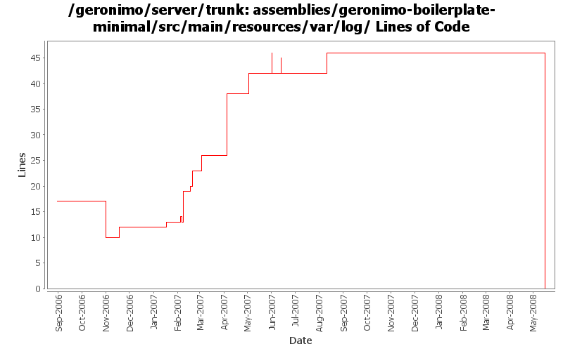

[root]/assemblies/geronimo-boilerplate-minimal/src/main/resources/var/log

| Author | Changes | Lines of Code | Lines per Change |
|---|---|---|---|
| Totals | 28 (100.0%) | 77 (100.0%) | 2.7 |
| dwoods | 4 (14.3%) | 30 (39.0%) | 7.5 |
| kevan | 4 (14.3%) | 15 (19.5%) | 3.7 |
| pmcmahan | 2 (7.1%) | 9 (11.7%) | 4.5 |
| gawor | 2 (7.1%) | 6 (7.8%) | 3.0 |
| djencks | 2 (7.1%) | 6 (7.8%) | 3.0 |
| jdillon | 9 (32.1%) | 5 (6.5%) | 0.5 |
| dain | 1 (3.6%) | 3 (3.9%) | 3.0 |
| gdamour | 3 (10.7%) | 2 (2.6%) | 0.6 |
| hogstrom | 1 (3.6%) | 1 (1.3%) | 1.0 |
Drop -minimal suffix on the boilerplate, since we only have one of these now, the suffix is meaningless
0 lines of code changed in 3 files:
GERONIMO-3400 Log4JServiceEnv and JVM info is no longer being logged. Allow any log levels through the file appender.
7 lines of code changed in 1 file:
Undo... Worked around by other means on trunk...
0 lines of code changed in 1 file:
Merge fix from branches/2.0-M6 onto trunk. Suppresses startp message for MEJB
3 lines of code changed in 1 file:
revered local change committed by mistake
1 lines of code changed in 1 file:
endorse override should not be necessary with latest cxf snapshot
5 lines of code changed in 1 file:
Comment out the JPA tracing, which shouldn't be turned on by default for everyone...
1 lines of code changed in 1 file:
GERONIMO-3131 GERONIMO-3132 GERONIMO-3133 GERONIMO-3134 Defaults for persistence units. Supply locations of jars with persistent classes to the PersistenceUnitInfo. Match a ref with not persistence unit specified to a unique match. Allow wars to have jndi references pointing to the war module, not just the ear
4 lines of code changed in 1 file:
Corrected spelling error on the Threshold value for one of the log4j properties
1 lines of code changed in 1 file:
GERONIMO-3064 - updated patch to show the Axis/Axis2 log categories as examples for enabling debug info
9 lines of code changed in 1 file:
GERONIMO-3064 Add axis2 log4j configure properties so that people can turn on axis2 logs in geronimo. Thanks Lin. I also added the Axis v1 log categories.
13 lines of code changed in 1 file:
Std props
4 lines of code changed in 1 file:
GERONIMO-2804 implement JSF support
- update the myfaces snapshot jars to avoid ELContext problem in its resolvers
- remove references to commons-taglibs where not needed or replace with references to jstl/jstl
- enable myfaces context listener in tomcat by providing new gbean property. tomcat's
default method for finding listeners in TLDs doesn't work with Geronimo's multiparent classloader.
- add org.apache.myfaces and org.apache.taglib to non-overrideable classes for webapps
- enable TLD processing in jetty context so that it can find the myfaces listener
- squelch spurious WARN messages from myfaces configuration startup
3 lines of code changed in 1 file:
Second attempt to change the way the online/offline deployers and the JSR88
deployment driver work. The first attempt was breaking the TCK amd the
eclipse plugin.
Online deployer, i.e. deployer.jar, boots a Kernel to load its dependencies,
e.g. geronimo-deploy-tool, and registers the available ModuleConfigurers with
the DeploymentManager.
ModuleConfigurers to be registered are loaded by the persistent configuration
list jsr88-configurer-config.xml.
In the case of an offline deployment, the online deployer starts the
offline-deployer configuration within the same Kernel. In turn, the
offline-deployer configuration starts a list of configurations to register
the available module builders.
Add a log4j configuration for the online deployer.
DeploymentFactoryBootstrapper is the new JSR88 deployment driver. It boots a
kernel; starts the configuration list jsr88-configurer-config.xml; retrieves
the "actual" DeploymentFactory implementation from the kernel; and delegates
to this retrieved imoplementation.
The JSR88 JAR driver is now named jsr88-deploymentfactory.jar.
This fixes:
* GERONIMO-2794 - Improve online deployer to register ModuleConfigurers from the repository; and
* GERONIMO-2767 - Minimize side effects of the offline deployer
1 lines of code changed in 1 file:
GERONIMO-2804 implement JSF support.
check in new myfaces-1.2-SNAPSHOT jars
separate jasper dependencies into a new config, pointing tomcat and jetty at it for their JSP support.
add the jstl and myfaces deps into the new jasper config since they need to use the same classloader
6 lines of code changed in 1 file:
Revert deployer changes as they do break the Eclipse plugin and TCK.
I will investigate offline.
svn merge -r503370:503369 .
0 lines of code changed in 1 file:
Online deployer, i.e. deployer.jar, boots a Kernel to load its dependencies,
e.g. geronimo-deploy-tool, and registers the available ModuleConfigurers with
the DeploymentManager.
ModuleConfigurers to be registered are loaded by the persistent configuration
list jsr88-configurer-config.xml.
In the case of an offline deployment, the online deployer starts the
offline-deployer configuration within the same Kernel. In turn, the
offline-deployer configuration starts a list of configurations to register
the available module builders.
Add a log4j configuration for the online deployer.
This fixes:
* GERONIMO-2794 - Improve online deployer to register ModuleConfigurers from the repository; and
* GERONIMO-2767 - Minimize side effects of the offline deployer
1 lines of code changed in 1 file:
(GERONIMO-2740) Make Tomcat's SSLImplementation be quieter by default to avoid lame CNFE
1 lines of code changed in 1 file:
GERONIMO-2537 Update more src file headers
12 lines of code changed in 2 files:
GERONIMO-2473 Replace dumb gbean logging with commented out connection leak tracing setting
2 lines of code changed in 1 file:
Fix activemq logging configuration
Ignore some standard activemq shutdown exceptions
3 lines of code changed in 1 file:
Use new config properties... logger instead of category
0 lines of code changed in 4 files: